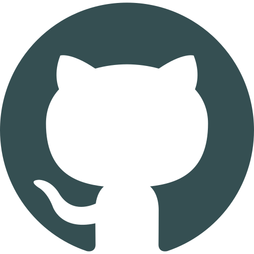

aline.chahine@proton.me
(11)98057-0843
aichahine
Técnico em Desenvolvimento de Sistemas | Etec Camargo Aranha | 2025-2026
Tecnólogo em Marketing | Fatec Sebrae | 2022-2024
Tecnólogo em Gestão de Negócios | Fatec Sebrae | 2017-2019
Técnico em Edificações | IFSP | 2010-2011
Técnico em Administração | Etec Guaracy Silveira | 2008-2009
Analista de sistemas | CI&T | a partir de julho/2024
Analista de sistemas | Accenture | de outubro/2021 a junho/2024
Analista administrativo | Intervozes | de outubro/2019 a setembro/2021
Programação C# | Senai Informática | 2021
Salesforce Developer | Fundação FAT | 2021
Leitura | Ouvir música | Visitar exposições de arte
"Isso que eu tô fazendo (...) é uma demonstração do trabalho de um programador. Eu não sei fazer. Mas eu sei procurar como faz"